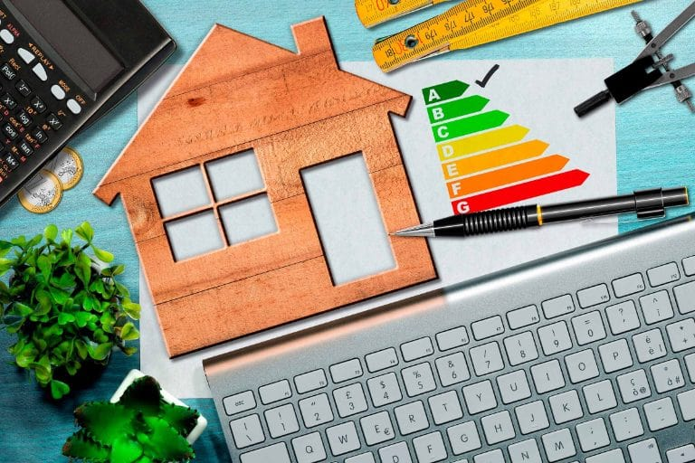

Las ecoetiquetas son distintivos que ayudan a la identificación de productos, materiales o servicios que han sido elaborados en base a unos criterios que garantizan el cuidado y la conservación del medioambiente. Su objetivo es ayudar al consumidor en la identificación y elección de estos artículos con menor impacto para el planeta. Las ecoetiquetas abarcan una amplia gama de productos, desde los dedicados a la limpieza o a la iluminación, como por ejemplo las bombillas, a electrodomésticos, siendo aplicables también en todo tipo de establecimientos.
Tipos de ecoetiquetas
• ETIQUETADOS LEGALES: Legales obligatorios, como por ejemplo el etiquetado de sustancias peligrosas, el marcado CE y las etiquetas de uso alimentario. Dentro de este tipo también están todas las de eficiencia energética (aparatos de uso doméstico, neumáticos, automóviles y edificios).Existen también etiquetados legales voluntarios, el ejemplo más claro es el punto verde de Ecoembes que significa que la empresa fabricante paga una tasa para la gestión de sus envases. Es un etiquetado legal, porque está recogido en la Ley de Envases y Residuos y además voluntario porque cada productor decide se se adhiere o no a Ecoembes.
• ETIQUETADOS VOLUNTARIOS: A diferencia de los anteriores, este tipo no está marcado por la legislación y su uso es totalmente voluntario. Dentro de esta categoría están las etiquetas ecológicas o ecoetiquetas. ¿Para qué sirven las ecoetiquetas? para que el fabricante nos demuestre que está cumpliendo con una serie de requisitos medioambientales y para que el consumidor sea capaz de identificar productos medioambientalmente más sostenibles.
• ECOETIQUETAS TIPO I: Son sistemas voluntarios de etiquetado ambiental que identifican y certifican de forma oficial que los productos que la llevan tienen un menor efecto sobre el medio ambiente. A nivel europeo existen sistemas nacionales de ecoetiquetado como el Ángel Azul de Alemania o AENOR Medio Ambiente de España
• ETIQUETADO SEMI-TIPO I: Estas ecoetiquetas suelen pertenecer a organizaciones sociales, asociaciones sectoriales, agrupaciones de empresas fabricantes, etc. Cuyo principal objetivo es conseguir que la mayor cantidad de productos posibles se certifiquen bajo su sistema, para lograr el mayor reconocimiento posible por parte de los consumidores. Dentro de este tipo se encuentran las etiquetas de agricultura ecológica, pesca sostenible, consumo energético, uso de madera (FSC, PEFC), productos textiles... Las que solemos encontrar en muchos productos que compramos a diario. A partir de hoy te vas a fijar mucho más.

Las ecoetiquetas, como el sello FSC, MSC, Energy Star, entre otros, sirven como herramientas para que los consumidores tomen decisiones más informadas y sostenibles al comprar productos o servicios. Estas etiquetas proporcionan información sobre el impacto ambiental, social o económico de un producto o servicio, permitiendo a los consumidores elegir opciones que sean más amigables con el medio ambiente, éticas o energéticamente eficientes.